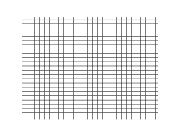
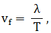

Unde mecanice
Definiție: Fenomenul de propagare, din aproape în aproape, a unui fenomen variabil în timp se numește undă.
Observații:
1) Dacă în mediul material perturbat se manifestă numai forțe elastice se spune că unda este una elastică.
2) „Punctul” în care se aplică perturbația externă se numeşte sursă sau centru de oscilație.
3) Propagarea oscilațiilor de la sursă nu se face instantaneu, ci treptat, cu o viteză finită.
Pentru propagarea undelor mecanice este necesară prezența unui
mediu. Experimental se constată că sunetul (o undă mecanică) nu se propagă în vid. Undele electromagnetice nu au însă nevoie de existența unui astfel de
mediu material: lumina se propagă prin vid, de exemplu, de la Soare la Pământ.
Propagarea undei nu înseamnă și un transport de substanță: particulele mediului oscilează cu
o anumită amplitudine în jurul pozițiilor lor de echilibru, dar aceste poziții de echilibru rămân fixe. Ceea ce se propagă este numai starea de mișcare
oscilatorie. Energia unei unde este energia cinetică și potențială a particulelor din mediul care oscilează. Transmiterea energiei se face însă prin trecerea
ei de la o porțiune din mediu la alta vecină și nu prin deplasarea mediului ca întreg.
Definiție: Se numește undă transversală acea undă
la care direcția de oscilație a particulelor din mediu este perpendiculară pe direcția de propagare a undei.
Definiție:
Se numește undă longitudinală acea undă la care direcția de oscilație a particulelor din mediu este paralelă pe direcția de propagare a undei.

Se numesc puncte de fază egală punctele din mediul de propagare a undei care oscilează în fază. Distanța dintre două puncte de fază egale vecine,
succesive pe direcția de propagare, se numește lungime de undă și se notează cu λ.
Definiție: Se numesc suprafețe de undă sau suprafețe de fază egală suprafețele închise, în jurul centrului de oscilație, pe care se dispun punctele
de fază egală.
Forma suprafeței de undă depinde atât de proprietățile mediului de propagare cât şi de forma sursei.
Considerând un mediu omogen și
izotrop:
- dacă sursa este punctuală sau sferică suprafețele de undă sunt sfere concentrice, iar unda este numită undă sferică;
-
dacă sursa de oscilație este o suprafață plană atunci suprafețele de undă sunt suprafețe plane paralele cu planul sursei, iar unda
este numită undă plană.
Observații:
1) liniile perpendiculare pe suprafețele de undă, numite raze, indică direcția de propagare a undei;
2)
suprafața de undă situată, la un moment dat, la cea mai mare depărtare de sursa de oscilații este numită frontul undei.
Punctele din mediu oscilează armonic,
toate, cu aceeași perioadă T. În timp de o perioadă unda parcurge distanța dintre două puncte de fază egală, situate succesiv pe direcția de propagare,
adică parcurge distanța λ.
Definiție: Se numeşte viteză de fază şi se notează cu vf, mărimea fizică definită de relația:

unde:
- λ este lungimea de undă, [λ]SI = 1m;
- T este perioada de oscilație a punctelor materiale din
mediul în care se propagă unda, [T]SI = 1s;
Viteza de propagare a unei unde transversale este dată de formula:
Viteza de propagare a unei unde longitudinale este dată de formula: